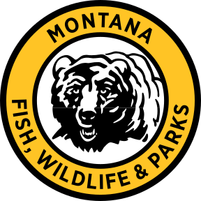
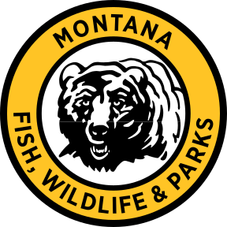

Montana PBS Production Services is a full service one-stop shop for story development, video & film production and live & studio events.
Though distinct from PBS Member Station Status and Broadcast, our Production Services Team brings our station’s state-of-the-art technology, experience and creative sensibilities to our clients.˚
Montana PBS has a long history of providing video and film production services for clients ranging from state agencies, private non-profit groups, public institutions and television network contracts.
 

With our state-of-the-art studio and field equipment, our Bozeman, Montana-based crew travels far and wide to produce video and live events for our diverse set of clients. We have state-of-the-art studio equipment and specialized staff for Live Event clients across the spectrum of sports, awards ceremonies, speaking events, and performances
Our other arm of production services specializes in produced video content for a wide range of clients across the state. Our field equipment and producers specialize in creative stories ranging from fea-ture documentaries to short-form commercial work. Montana PBS Production Services combines our station’s resources and storytelling sensibilities for a unique client experience. Reach out to see if your project is right for our team.
Short + longform documentaries for distribution, client platforms and public platforms. Develop and create videos for public institutions, private entities and non-profit organizations.
Satellite Uplinks Television Networks: ABC, Al Jazeera, Bloomberg TV, C-Span, CNBC, Fox News, NBC, Reuters
MSU Volleyball, Basketball, Football, Rodeo, Track & Field

Director and General Manager
aaron_pruitt@montanapbs.org
For 27 years, Aaron has provided leadership in programming, production, fundraising and management at Montana PBS. He served as Executive Producer for many award-winning productions including 11th & Grant with Eric Funk, Class C: The Only Game in Town, Fort Peck Dam, Finding Traction, Keeping the Barn and Charlie Russell’s Old West. Pruitt collaborates with independent filmmakers distributing programs to national public television, such as The Last Artifact (APT), Before There Were Parks: Yellowstone and Glacier Through Native Eyes (PBS NPS) and two PBS INDEPENDENT LENS documentaries, Butte America and Indian Relay. With recent service as chair of Humanities Montana, Aaron currently is a board member of Montanans for 4-H, the Friends of Montana PBS and the Montana Broadcasters Association.

Director of Production
scott@montanapbs.org
For 27 years, Aaron has provided leadership in programming, production, fundraising and management at Montana PBS. He served as Executive Producer for many award-winning productions including 11th & Grant with Eric Funk, Class C: The Only Game in Town, Fort Peck Dam, Finding Traction, Keeping the Barn and Charlie Russell’s Old West. Pruitt collaborates with independent filmmakers distributing programs to national public television, such as The Last Artifact (APT), Before There Were Parks: Yellowstone and Glacier Through Native Eyes (PBS NPS) and two PBS INDEPENDENT LENS documentaries, Butte America and Indian Relay. With recent service as chair of Humanities Montana, Aaron currently is a board member of Montanans for 4-H, the Friends of Montana PBS and the Montana Broadcasters Association.
Senior Producer
erika.share@montanapbs.org
Erika brings a wealth of production experience to our team. She is a co-owner of Wild Vision Films, a Bozeman-based pr oduction company and is a newly appointed Senior Pr oducer for Montana PBS. She serves in many capacities, from cinematographer to editor to producer, on films for Disney+, Magnolia Network, NBC Peacock, Discovery Channel, National Geographic, and others. Prior to her freelance work, she served as senior producer and editor for “The Onion” in Chicago. wildvisionfilms.com for recent work

Live Producer
audrey@montanapbs.org
With immense experience in performances and live events, Audrey will be producing and directing the two performance shoots and editing all four performance videos. Audrey’s recent work includes directing and producing Rising Voices, a live performance show that featured the original music of two Indigenous Montana musicians, Mario Miner Jr and Ash Nataanii. Audrey directs Bobcat Athletics Coverage for ESPN+, Montana AG Live, performances for Celebrate America, pledge events for Montana PBS, the Montana Broadcasters Associations’ EB Craney Awards, and educational performances of local plays at MSU’s BlackBox theater.